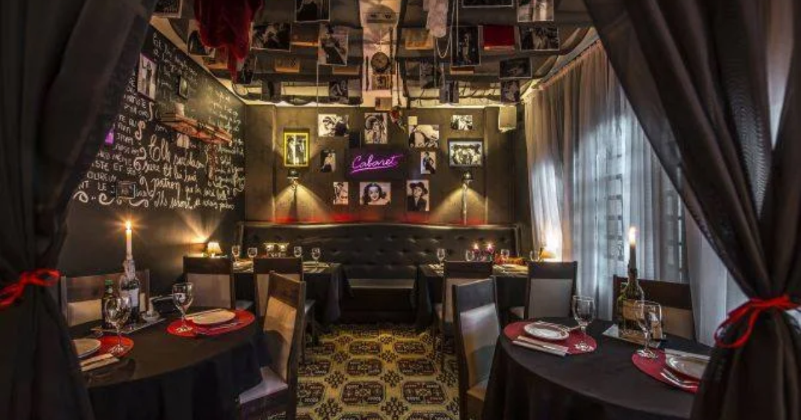
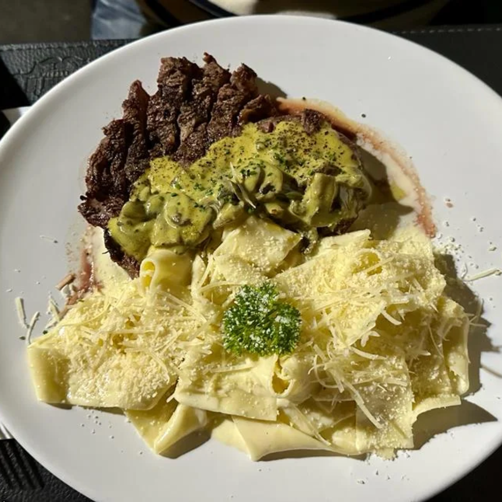
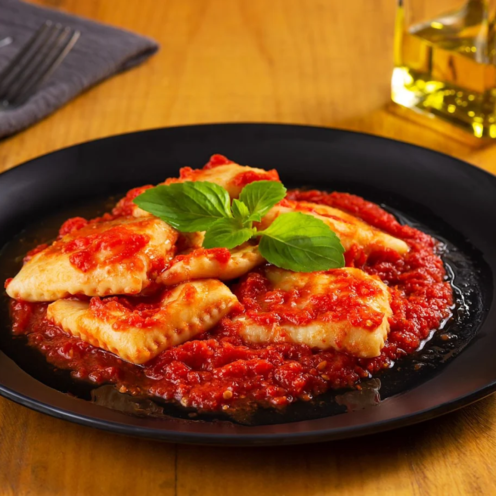

La Mafia Trattoria

★★★★
Informações Gerais
📍R. Watslaf Nieradka, 195 - Centro, Foz do Iguaçu - PR
📞Telefone: +55 4598418-1194
🕒Horário de funcionamento: Segunda a Sábado das 18:45 ás 23:00 horas.
Sobre
A La Mafia Trattoria, em Foz do Iguaçu, é um restaurante italiano aconchegante e sofisticado, que oferece pratos tradicionais da culinária italiana com um toque especial. O cardápio inclui massas frescas, risotos e deliciosas sobremesas, preparados com ingredientes de alta qualidade e sabor autêntico. Com um ambiente elegante e acolhedor, a La Mafia Trattoria é ideal para quem busca uma refeição deliciosa em um local agradável e com atendimento impecável.


Comentários (3.751 avaliações)
Ana Vitória ★★★★★
A experiência na La Mafia Trattoria foi muito boa! Os pratos são saborosos, com massas frescas e ingredientes de alta qualidade. O ambiente é agradável e acolhedor, mas o serviço poderia ser um pouco mais ágil. No geral, uma excelente opção para quem quer saborear a culinária italiana em Foz do Iguaçu!Gostou? Deixe sua avaliação!